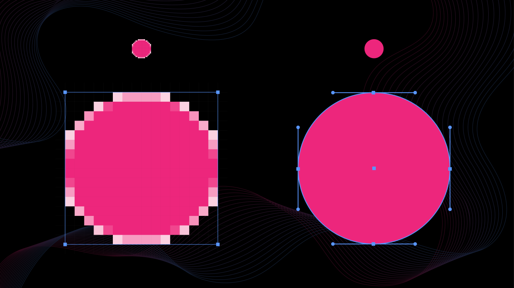
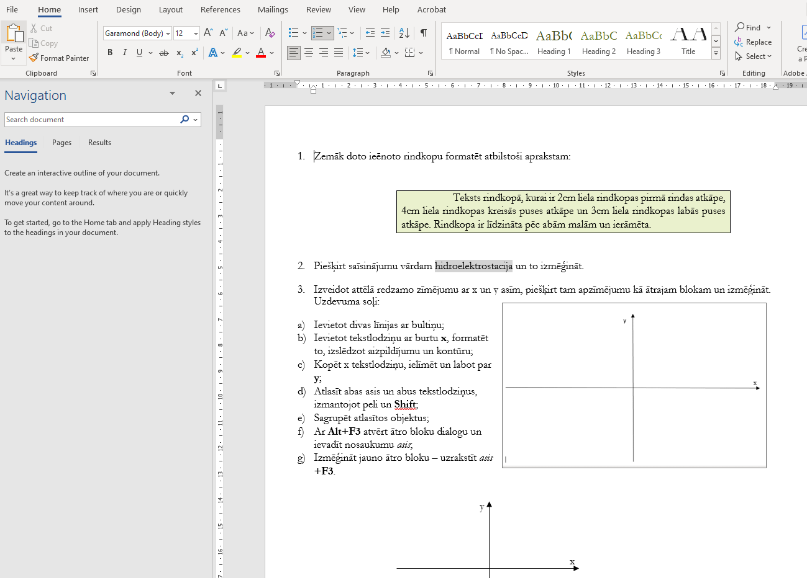
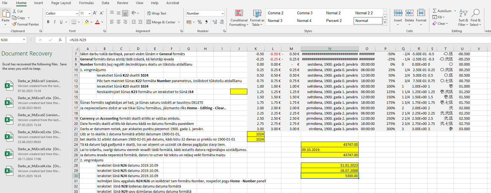

Mana vidējā atzīme
8.7
Datorgrafika
Zinu galvenās atšķirības un iezīmes datorgrafikas veidiem.
Datorgrafika iedalās vektorgrafikā un raksta grafikā. Galvenās atšķirības ir ka raksta grafika sastāv no "kvadrātiņiem" bet vektorgrafika no līknēm.
Māku izmantot programmas Gimp un Inkscape
3D suvenīrs
Projektā es apguvu 3D modelēšanas un drukāšanas pamatprincipus, veicu vingrinājumu Tinkercad.com un piedalījos grupu darbā, izstrādājot uzņēmuma ideju, izmantojot dizaina domāšanu. Tāpat izveidoju uzņēmuma logo, izmantojot Inkscape, kas palīdzēja attīstīt gan 3D, gan grafiskā dizaina prasmes.
Darba gaita veiksmīgam projektam
problēmas apzināšanās
dizaina domāšana
rototipēšana
noslēgums
MS Word & MS Exel
MS Word
MS Word ir spēcīgs rīks, kas tiek plaši izmantots tekstapstrādē, un manā mācību procesā tas ir bijis būtisks. 15. novembrī 3. stundā atkārtoju MS Word rīkus un iespējas tekstapstrādē, izmantojot dažādus vingrinājumus, piemēram, izmantojot KD paraugus, lai labāk saprastu, kā efektīvi strādāt ar dokumentiem. 22. novembrī veicu pārbaudes darbu, kurā tika pārbaudītas MS Word rīku prasmes, kas ļāva apliecināt iegūtās zināšanas un spēju pielietot tās praktiskos uzdevumos. Tas ļāva sagatavoties nākamajiem uzdevumiem un dziļāk apgūt programmas funkcijas.
MS Exel
MS Excel ir izrādījies ļoti noderīgs rīks datu apstrādē un analīzē. 6. decembrī, 3. stundā, es atkārtoju šūnu adresācijas veidus un statistiskos datus, izmantojot Excel funkcijas, lai atrastu lielāko, mazāko un vidējo vērtību. Vēlāk, 13. decembrī, es strādāju ar Excel, izmantojot formulas un funkcijas, piemēram, zarošanos (IF), kā arī apguvu datu kārtošanu un filtrēšanu, lai efektīvi manipulētu ar datiem. Mācību procesā tika veiktas arī dažādas praktiskas uzdevumu pabeigšanas, piemēram, Darbs_ar_MsExcel3.xlsx, kas ļāva apgūt programmas iespējas un pilnveidot prasmes datu analīzē.